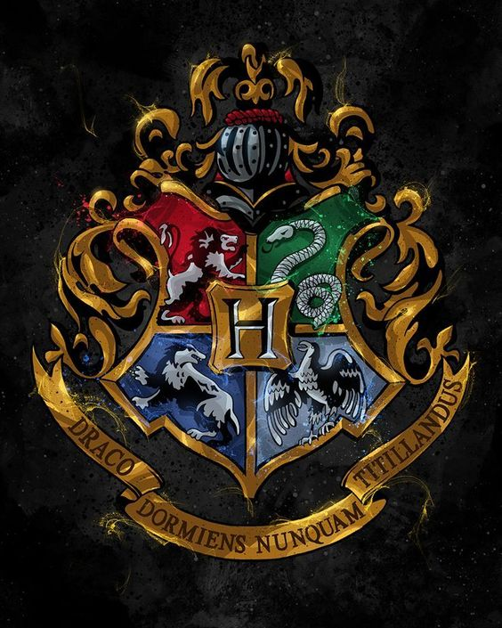

SEKOLAH SIHIR
Sekolah sihir adalah sebuah lembaga pendidikan yang menyediakan instruksi sihir kepada para penyihir muda
Ada sebelas sekolah sihir yang sudah lama berdiri dan bergengsi di seluruh dunia, yang semuanya terdaftar di Konfederasi Penyihir Internasional . Lembaga yang lebih kecil dan kurang teregulasi jarang terdaftar di Kementerian terkait dan sulit dilacak. Namun, sebagian besar negara di dunia tidak memiliki sekolah sihir sendiri. Anak-anak penyihir di negara-negara ini biasanya bersekolah di rumah atau dididik melalui kursus korespondensi
Sebagian besar pendidikan dasar sebelum masuk sekolah sihir juga berlangsung di rumah. Entah sengaja atau tidak, anak-anak bisa menggunakan sihir dan menarik perhatian yang tidak diinginkan, dan ini juga berlaku bagi para kelahiran Muggle .
Lokasi sekolah
Lokasi pasti sebagian besar sekolah sihir dirahasiakan, baik untuk mencegah sekolah ditemukan oleh Muggle maupun untuk melindunginya dari dampak buruk perang atau campur tangan pemerintah dalam negeri atau asing. Umumnya, sekolah sihir terletak di daerah pegunungan yang terkurung daratan, yang sulit diakses tanpa sihir dan lebih mudah dipertahankan jika terjadi serangan. Namun, ada pengecualian, seperti Sekolah Sihir Mahoutokoro yang terletak di pulau Minami Iwo Jima , dan Castelobruxo di hutan hujan Amazon
Jangkauan dan Regulasi
Sebagian besar negara di dunia tidak memiliki sekolah sihir mereka sendiri. Para penyihir di negara-negara ini umumnya memilih untuk mendidik anak-anak mereka di rumah. Kursus korespondensi juga terkadang digunakan sebagai metode yang hemat biaya untuk memberikan instruksi sihir kepada para penyihir muda di negara-negara dengan populasi penyihir yang sangat kecil atau terisolasi.
Sekolah sihir umumnya menerima siswa dari negara mana pun tempat mereka bermarkas, tetapi beberapa melayani beberapa negara atau wilayah geografis yang luas, atau setidaknya terbuka untuk menerima siswa internasional secara selektif. Castelobruxo , Ilvermorny dan Uagadou menerima siswa dari seluruh benua masing-masing, sedangkan Hogwarts hanya menerima siswa dari Inggris Raya dan Irlandia .

The Ravenwood Academy of Witchcraft and Sorcery
East Spire Tower, Room 302
Moonlight Meadow, Enchanted Forest
Mistvale, Eldoria 4821
The Mystical Realm
© 2024 Sekolah sihir. All rights reserved.